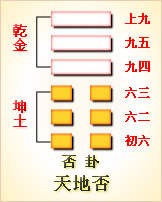

<!DOCTYPE html PUBLIC "-//W3C//DTD XHTML 1.0 Transitional//EN" "http://www.w3.org/TR/xhtml1/DTD/xhtml1-transitional.dtd">

<html xmlns="http://www.w3.org/1999/xhtml">
<head>
<meta content="text/html; charset=utf-8" http-equiv="Content-Type"/>
<title>周易第十二卦：否�?天地�?乾上坤下原文解释翻译-周易-国学�?/title>
<meta content="周易,否卦,地天�?乾上坤下" name="keywords"/>
<meta content="周易,否卦,地天�?乾上坤下，周易第十二卦：否卦 天地�?乾上坤下解释翻译�?（天地否）乾上坤�?《否》：否之匪人，不利君子贞，大往小来�?初六，拔茅茹以其汇。贞吉，亨�?六二，包承，小人吉，大人否。亨�?六三，包羞�?九四，有命，无咎，畴离祉�? name="description"/>
<link href="css.css" media="screen" rel="stylesheet" type="text/css"/>
</head>
<body>
<div class="gxlayout">
</div>
<div class="gxlayout">
<div class="ihead">
<div class="title"><a>周易</a></div>
<ul class="more fl">
<li>当前位置:<a>国学梦首�?/a> &gt; <a>国学经典</a> &gt; <a>经部</a> &gt; <a>四书五经</a> &gt; <a>周易</a> &gt;  周易第十二卦：否�?天地�?乾上坤下原文解释翻译</li>
</ul>
</div>
<div class="gxbl fl">
<div class="latitle">

<h1>周易第十二卦：否�?天地�?乾上坤下</h1>
<div class="lainfo"><span>作者：佚名</span> <span>全集�?a>周易</a></span> <span>来源：网�?/span> <span>[<a rel="nofollow" target="_blank">挑错/完善</a>]</span></div>
</div>
<div class="lacontent">
<div class="clearfix"></div>
<p style="text-align:center"></p>
<p style="text-align:center"><a>周易第十二卦详解</a></p>
<p style="text-align:center"><a>第十二卦初六爻详�?/a>　<a>第十二卦六二爻详�?/a>　<a>第十二卦六三爻详�?/a></p>
<p style="text-align:center"><a>第十二卦九四爻详�?/a>　<a>第十二卦九五爻详�?/a>　<a>第十二卦上九爻详�?/a></p>
<p><strong><a target="_blank">周易</a>第十二卦 �?天地�?乾上坤下</strong></p>
<p>否：否之匪人，不利君子贞，大往小来�?/p>
<p>彖曰：否之匪人，不利君子贞。大往小来，则是天地不交，而万物不通也;上下不交，而天下无邦也。内阴而外阳，内柔而外刚，内小人而外君子。小人道长，君子道消也�?/p>
<p>象曰：天地不交，�?君子以俭德辟难，不可荣以禄�?/p>
<p>初六：拔茅茹，以其夤，贞�?亨。象曰：拔茅贞吉，志在君也�?/p>
<p>六二：包承。小人吉，大人否亨。象曰：大人否亨，不乱群也�?/p>
<p>六三：包羞。象曰：包羞，位不当也�?/p>
<p>九四：有命无咎，畴离祉。象曰：有命无咎，志行也�?/p>
<p>九五：休否，大人吉。其亡其亡，系于苞桑。象曰：大人之吉，位正当也�?/p>
<p>上九：倾否，先否后喜。象曰：否终则倾，何可长也�?/p>
<p><strong><a href="12_否卦.html" target="_blank">否卦</a>卦象，天地否卦的象征意义</strong></p>
<p><strong>�?a target="_blank">易经</a>》第十二卦，否卦、天地否；乾上坤下，天地否卦有哪些具体的象征意义呢？</strong> 否卦是异卦重叠，�?a href="01_乾卦.html" target="_blank">乾卦</a>�?a href="02_坤卦.html" target="_blank">坤卦</a>组成，乾上坤下，�?a href="11_泰卦.html" target="_blank">泰卦</a>正好相反。我们知道，泰卦是乾下坤上，乾代表阳气，坤代表阴气，阳气上升，阴气下降，两种气相融，交相呼应，一派安泰祥和的局面。而在否卦这里，乾在上，阳气上升，坤在下，阴气下沉，阴阳相背，阴居内而阳居外，正是“否”卦阴阳堵塞、天地不通的症结�?/p>
<p>从卦形上看，乾在上，上为天，坤在下，下为地，各在各的位置上，这意味着互不交往，不与外界发生关系，位置固定不变，按着陈规陋习办事。“否”卦是不通畅、阻塞、恶化、贬斥的意思。是自己把自己封闭起来，阻塞了前进的道路�?/p>
<p>否卦是不利君子，小人就要得势，君子将要隐退的趋向。小人挡住了君子的道路，因为坤属于内卦，乾属于外卦，有小人主内政，君子靠外，小人得势，君子受排斥之像�?/p>
<p>否卦位于泰卦之后，《序卦》之中这样解释道：“物不可终通，故受之以否。”永远通达是不可能的，所以会有阻塞，所以接下来讲的就是否卦�?/p>
<p>《象》曰：天地不交，“否�?君子以俭德辟难，不可荣以禄�?/p>
<p>《象》中指出：否卦的卦象为坤(�?下乾(�?上，为天在地上之表象。天在极高之处，地在极低之处，天地阴阳之间因而不能互相交合，所以时世闭塞不通，这时候君子必须坚持勤俭节约的美德，以避开危险与灾难不能谋取高官及丰厚的俸禄，去追求荣华富贵。否卦象征闭塞，属于中中卦。《象》中这样来断此卦：虎落陷坑不堪言，进前容易退后难，谋望不遂自己便，疾病口舌事牵连�?/p>
<p>此卦的卦名为否。“否”的意思是闭塞、阻隔不通、变坏、灭绝。正所谓泰往否来，前面亨通了，博大了，太平了，由于达到了极点，所以物极必反，出现了否卦。《周易》中的八卦次序，�?a target="_blank">�?/a>上是非覆即变，其含义也是相连有序，极其连贯地表达出事物的变化规律�?/p>
<p>否卦的卦画正好与泰卦相反，变成了天在地上。这本来是自然的真实情形，怎么会代表极不吉祥的意思呢?原来，乾卦为天为阳，具有向上的性质;坤卦为地为阴，具有向下的性质;天与地目标不同，不能同心同德，就像君王与民众不一条心，么会亨通呢?</p>
<p>君王怎么与民众不一条心了呢?这是因为一个太平盛世导致的。太平盛世的君王开始好大喜功，开始注重享乐，注重排场与奢侈，可是这种生活从哪里来?是从民脂民膏中得来的。搜刮民财以享帝王之欲，可是欲壑难填啊，把民众骨头里的油脂都抽出来，也填不满君王的欲壑，于是君王与民众之间便会产生矛盾了。而盛世也就由盛转衰了。怎么说衰就衰了呢?是啊，这就是欲壑的厉害。纣王因为一根象牙筷子而逐渐走向了灭国，其实就是把全国的大象都杀了，也不致于灭国呀。悲惨的是纣王由这一双象牙筷子产生了欲壑，因为欲望这条沟是什么东西也填不满的。下面我们便分析一下泰极否来之后该做些什么吧�?/p>
<p>关键词：周易,否卦,地天�?乾上坤下</p>
<div class="clearfix"></div>
<div class="title"><div class="thot">解释翻译</div><span>[挑错/完善]</span></div><p>�?a href="12_否卦.html" target="_blank">否卦</a>）：做坏事的是小人，这是对君子不利的征兆。由大利 转为小利�?/p>
<p>初六：拔掉茅茹草，按它的种类特征来分辨。征兆吉利、亨通�?/p>
<p>六二；庖厨中有肉，这对平民百姓是好事，对王公贵族算不上好事�?/p>
<p>六三：庖厨中有美味�?/p>
<p>九四：君王有赏赐的命令，没有灾祸，但不知得到赏赐的人是谁�?/p>
<p>九五：不要干坏事，王公贵族知道就好。多么危险呵，国家命运就像系在苞草和桑枝上一样�?/p>
<p>上九：干坏事要倒霉。先碰上恶运，最后还是可以交好运�?/p>
<p> </p>
<div class="title"><div class="thot">注释出处</div><span>[请记住我�?国学�?www.guoxuemeng.com]</span></div><p>①本卦的标题是否（Pi）。原经文卦象后无“否”字。否的意思是闭塞�?不好，与“泰”的意思相反。卦象是表示天的“乾”和表示地的“坤”相�?加，以示阴阳阻塞，不相通畅。全卦内容仍然是讲对立面相互转化的道理�?/p>
<p>②否：不好，这里指做坏事。匪人：败类，小人�?/p>
<p>③包：用作“庖”， 指庖厨。承：用作“普”，意思是肉�?/p>
<p>④羞：即“饈”的本字，意思是�?味�?/p>
<p>⑤有命：君王有赏赐的命令�?/p>
<p>(6)畴：谁。离：受到，得到。祉：福�?/p>
<p>(7)休否：不要干坏事�?/p>
<p>(8)亡：危险，败亡。其亡其亡：危险到了极点�?/p>
<p>(9)苞桑：苞草和桑树枝�?/p>
<p>(10)倾：覆灭，倒下。倾否：干坏事要倒霉�?/p>
<p> </p>
<div class="clearfix"></div>
<div class="contextdhall clearfix">
<ul>
<li>上一篇：<a href="11_泰卦.html">周易第十一卦：泰卦�?地天�?坤上乾下</a> </li>
<li>下一篇：<a href="13_同人�?html">周易第十三卦：同人卦 天火同人 乾上离下</a> </li>
<li>全   文�?a>周易</a></li>
</ul>
</div>
</div>
<div class="clearfix mt20"></div>
</div>
</div>
<div class="clearfix mt20"></div>
<div class="gxlayout">
</div>
<script>
var _hmt = _hmt || [];
(function() {
  var hm = document.createElement("script");
  hm.src = "https://hm.baidu.com/hm.js?872034ded637616c5cf8e173a446bb0e";
  var s = document.getElementsByTagName("script")[0];
  s.parentNode.insertBefore(hm, s);
})();
</script>
</body>
</html>
